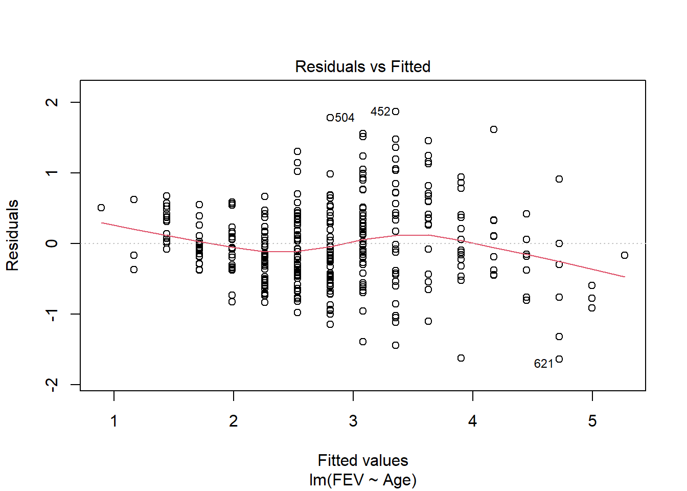

set.seed(3)
iris_example_species <-data.frame(
Species = c(rep("baruch",25), rep("hunter", 25), rep("york", 25)),
Petal_Length = runif(75,2,4 ))
set.seed(31)
iris_example_species$Sepal_interaction <-
iris_example_species$Petal_Length * c(rep(-2, 25),rep(0,25), rep(5,25)) +
c(rep(2,25), rep(3,25), rep(4,25)) + rnorm(75)Combining (lots of) numerical and categorical predictors
ANCOVAs and beyond
Remember you should
- add code chunks by clicking the Insert Chunk button on the toolbar or by pressing Ctrl+Alt+I to answer the questions!
- use visual mode or render your file to produce a version that you can see!
- render your file to make sure it runs (and that you haven’t been working out of order)
- save your work often
- commit it via git!
- push updates to github
Example
Following the iris example from class
Plot the data
library(ggplot2)
ggplot(iris_example_species, aes(x= Petal_Length, y = Sepal_interaction, color = Species)) +
geom_point()+
ylab("Sepal Length") +
xlab("Petal Length") +
ggtitle("Impact of petal length and species on sepal length") +
geom_smooth(method = "lm", se = F)`geom_smooth()` using formula = 'y ~ x'Analysis would indicate (assumption plots not shown here to allow focus on interpreting interactions)
library(car)
Anova(lm( Sepal_interaction~ Petal_Length * Species, iris_example_species),
type = "III")Anova Table (Type III tests)
Response: Sepal_interaction
Sum Sq Df F value Pr(>F)
(Intercept) 7.076 1 8.0267 0.006038 **
Petal_Length 38.452 1 43.6177 6.88e-09 ***
Species 3.353 2 1.9015 0.157092
Petal_Length:Species 227.334 2 128.9368 < 2.2e-16 ***
Residuals 60.828 69
---
Signif. codes: 0 '***' 0.001 '**' 0.01 '*' 0.05 '.' 0.1 ' ' 1interactions do exist. This means we can’t interpret the “general” relationship, so we need to look for each species using regression.
summary(lm(Sepal_interaction ~ Petal_Length,
iris_example_species[iris_example_species$Species == "baruch",]))
Call:
lm(formula = Sepal_interaction ~ Petal_Length, data = iris_example_species[iris_example_species$Species ==
"baruch", ])
Residuals:
Min 1Q Median 3Q Max
-1.7194 -0.5504 -0.1860 0.4736 1.7067
Coefficients:
Estimate Std. Error t value Pr(>|t|)
(Intercept) 2.9734 0.9767 3.044 0.00576 **
Petal_Length -2.3663 0.3335 -7.097 3.14e-07 ***
---
Signif. codes: 0 '***' 0.001 '**' 0.01 '*' 0.05 '.' 0.1 ' ' 1
Residual standard error: 0.8738 on 23 degrees of freedom
Multiple R-squared: 0.6865, Adjusted R-squared: 0.6728
F-statistic: 50.36 on 1 and 23 DF, p-value: 3.144e-07Anova(lm(Sepal_interaction ~ Petal_Length,
iris_example_species[iris_example_species$Species == "baruch",]),
type="III")Anova Table (Type III tests)
Response: Sepal_interaction
Sum Sq Df F value Pr(>F)
(Intercept) 7.076 1 9.2676 0.005758 **
Petal_Length 38.452 1 50.3604 3.144e-07 ***
Residuals 17.561 23
---
Signif. codes: 0 '***' 0.001 '**' 0.01 '*' 0.05 '.' 0.1 ' ' 1summary(lm(Sepal_interaction ~ Petal_Length,
iris_example_species[iris_example_species$Species == "hunter",]))
Call:
lm(formula = Sepal_interaction ~ Petal_Length, data = iris_example_species[iris_example_species$Species ==
"hunter", ])
Residuals:
Min 1Q Median 3Q Max
-1.89221 -0.58055 0.00876 0.47006 2.49756
Coefficients:
Estimate Std. Error t value Pr(>|t|)
(Intercept) 1.2564 1.1463 1.096 0.284
Petal_Length 0.4962 0.3895 1.274 0.215
Residual standard error: 0.9902 on 23 degrees of freedom
Multiple R-squared: 0.06589, Adjusted R-squared: 0.02528
F-statistic: 1.622 on 1 and 23 DF, p-value: 0.2155Anova(lm(Sepal_interaction ~ Petal_Length,
iris_example_species[iris_example_species$Species == "hunter",]),
type="III")Anova Table (Type III tests)
Response: Sepal_interaction
Sum Sq Df F value Pr(>F)
(Intercept) 1.1779 1 1.2014 0.2844
Petal_Length 1.5907 1 1.6224 0.2155
Residuals 22.5503 23 summary(lm(Sepal_interaction ~ Petal_Length,
iris_example_species[iris_example_species$Species == "york",]))
Call:
lm(formula = Sepal_interaction ~ Petal_Length, data = iris_example_species[iris_example_species$Species ==
"york", ])
Residuals:
Min 1Q Median 3Q Max
-1.45150 -0.69660 0.02717 0.83006 1.64698
Coefficients:
Estimate Std. Error t value Pr(>|t|)
(Intercept) 4.0617 0.9550 4.253 3e-04 ***
Petal_Length 4.9642 0.3024 16.417 3.4e-14 ***
---
Signif. codes: 0 '***' 0.001 '**' 0.01 '*' 0.05 '.' 0.1 ' ' 1
Residual standard error: 0.9491 on 23 degrees of freedom
Multiple R-squared: 0.9214, Adjusted R-squared: 0.918
F-statistic: 269.5 on 1 and 23 DF, p-value: 3.401e-14Anova(lm(Sepal_interaction ~ Petal_Length,
iris_example_species[iris_example_species$Species == "york",]),
type="III")Anova Table (Type III tests)
Response: Sepal_interaction
Sum Sq Df F value Pr(>F)
(Intercept) 16.292 1 18.087 0.0002998 ***
Petal_Length 242.770 1 269.527 3.401e-14 ***
Residuals 20.717 23
---
Signif. codes: 0 '***' 0.001 '**' 0.01 '*' 0.05 '.' 0.1 ' ' 1Here we see that there is a significant negative relationship (F1,23 = 50.36, p<0.001) between sepal and petal length for I. baruch, a significant positive relationship (F1,23 = 269.53, p<0.001) between sepal and petal length for I. york,and no relationship (F1,23 = 1.63, p<-0.21) between sepal and petal length for I. hunter.
Practice
1
Data on FEV (forced expiratory volume), a measure of lung function, can be found at
http://www.statsci.org/data/general/fev.txt
More information on the dataset is available at
http://www.statsci.org/data/general/fev.html.
Does the impact of age on FEV differ among genders? Consider how your answer to this differs from the previous assignment!
fev <- read.table("http://www.statsci.org/data/general/fev.txt", header = T,
stringsAsFactors = T)
fev_age <- lm(FEV ~ Age*Sex, fev)
plot(fev_age)library(car)
Anova(fev_age, type = "III")Anova Table (Type III tests)
Response: FEV
Sum Sq Df F value Pr(>F)
(Intercept) 18.654 1 69.087 5.506e-16 ***
Age 72.190 1 267.356 < 2.2e-16 ***
Sex 7.977 1 29.543 7.745e-08 ***
Age:Sex 17.426 1 64.535 4.467e-15 ***
Residuals 175.509 650
---
Signif. codes: 0 '***' 0.001 '**' 0.01 '*' 0.05 '.' 0.1 ' ' 1summary(fev_age)
Call:
lm(formula = FEV ~ Age * Sex, data = fev)
Residuals:
Min 1Q Median 3Q Max
-1.64072 -0.34337 -0.04934 0.33206 1.86867
Coefficients:
Estimate Std. Error t value Pr(>|t|)
(Intercept) 0.849467 0.102199 8.312 5.51e-16 ***
Age 0.162729 0.009952 16.351 < 2e-16 ***
SexMale -0.775867 0.142745 -5.435 7.74e-08 ***
Age:SexMale 0.110749 0.013786 8.033 4.47e-15 ***
---
Signif. codes: 0 '***' 0.001 '**' 0.01 '*' 0.05 '.' 0.1 ' ' 1
Residual standard error: 0.5196 on 650 degrees of freedom
Multiple R-squared: 0.6425, Adjusted R-squared: 0.6408
F-statistic: 389.4 on 3 and 650 DF, p-value: < 2.2e-16We can explore this question using an ANCOVA since the response is continuous and the explanatory variables combine a categorical and continuous variable. Analysis of residuals indicates the assumptions are met (no pattern, normal distribution). There is a significant interaction among age and gender on FEV (F1,650=64.535, p<.001). We should explore impacts of age on each gender separately.
fev_age <- lm(FEV ~ Age, fev[fev$Sex == "Male",])
plot(fev_age)
Anova(fev_age, type = "III")Anova Table (Type III tests)
Response: FEV
Sum Sq Df F value Pr(>F)
(Intercept) 0.147 1 0.4258 0.5145
Age 221.896 1 641.5722 <2e-16 ***
Residuals 115.518 334
---
Signif. codes: 0 '***' 0.001 '**' 0.01 '*' 0.05 '.' 0.1 ' ' 1summary(fev_age)
Call:
lm(formula = FEV ~ Age, data = fev[fev$Sex == "Male", ])
Residuals:
Min 1Q Median 3Q Max
-1.64072 -0.37752 -0.05318 0.36893 1.86867
Coefficients:
Estimate Std. Error t value Pr(>|t|)
(Intercept) 0.0736 0.1128 0.653 0.514
Age 0.2735 0.0108 25.329 <2e-16 ***
---
Signif. codes: 0 '***' 0.001 '**' 0.01 '*' 0.05 '.' 0.1 ' ' 1
Residual standard error: 0.5881 on 334 degrees of freedom
Multiple R-squared: 0.6576, Adjusted R-squared: 0.6566
F-statistic: 641.6 on 1 and 334 DF, p-value: < 2.2e-16Age has a significant (F1,334 = 641, p < 0.01) positive (.27 L yr-1) impact on FEV in males.
fev_age <- lm(FEV ~ Age, fev[fev$Sex == "Female",])
plot(fev_age)Anova(fev_age, type = "III")Anova Table (Type III tests)
Response: FEV
Sum Sq Df F value Pr(>F)
(Intercept) 18.654 1 98.262 < 2.2e-16 ***
Age 72.190 1 380.258 < 2.2e-16 ***
Residuals 59.991 316
---
Signif. codes: 0 '***' 0.001 '**' 0.01 '*' 0.05 '.' 0.1 ' ' 1summary(fev_age)
Call:
lm(formula = FEV ~ Age, data = fev[fev$Sex == "Female", ])
Residuals:
Min 1Q Median 3Q Max
-1.09240 -0.28991 -0.03762 0.28749 1.13451
Coefficients:
Estimate Std. Error t value Pr(>|t|)
(Intercept) 0.849467 0.085695 9.913 <2e-16 ***
Age 0.162729 0.008345 19.500 <2e-16 ***
---
Signif. codes: 0 '***' 0.001 '**' 0.01 '*' 0.05 '.' 0.1 ' ' 1
Residual standard error: 0.4357 on 316 degrees of freedom
Multiple R-squared: 0.5461, Adjusted R-squared: 0.5447
F-statistic: 380.3 on 1 and 316 DF, p-value: < 2.2e-16Age also has a significant (F1,316 = 380, p < 0.01) positive (.16 L yr-1) impact on FEV in females. The interaction is likely due to the higher rate of increase of FEV with age in males.
library(ggplot2)
ggplot(fev, aes(x=Age, y=FEV, color = Sex, shape = Sex)) +
geom_point(size = 3) +
ylab("FEV (L)") +
ggtitle("FEV increases faster \n with age in males")+
theme(axis.title.x = element_text(face="bold", size=28),
axis.title.y = element_text(face="bold", size=28),
axis.text.y = element_text(size=20),
axis.text.x = element_text(size=20),
legend.text =element_text(size=20),
legend.title = element_text(size=20, face="bold"),
plot.title = element_text(hjust = 0.5, face="bold", size=32)) +
geom_smooth(method = "lm", se = F)`geom_smooth()` using formula = 'y ~ x'2
Data on home gas consumption at various temperatures before and after new insulation was installed has been collected @
http://www.statsci.org/data/general/insulgas.txt
More information on the data is available @
http://www.statsci.org/data/general/insulgas.html
Is there any relationship between these factors? How would you test this, and what type of plot would you produce to accompany your analysis?
heat <- read.table("http://www.statsci.org/data/general/insulgas.txt",
header = T, stringsAsFactors = T)
head(heat) Insulate Temp Gas
1 Before -0.8 7.2
2 Before -0.7 6.9
3 Before 0.4 6.4
4 Before 2.5 6.0
5 Before 2.9 5.8
6 Before 3.2 5.8heat_model <- lm(Gas ~ Insulate * Temp, heat)
plot(heat_model)require(car)
Anova(heat_model, type = "III")Anova Table (Type III tests)
Response: Gas
Sum Sq Df F value Pr(>F)
(Intercept) 90.636 1 1243.911 < 2.2e-16 ***
Insulate 12.502 1 171.583 4.709e-16 ***
Temp 2.783 1 38.191 2.640e-07 ***
Insulate:Temp 0.757 1 10.391 0.002521 **
Residuals 2.915 40
---
Signif. codes: 0 '***' 0.001 '**' 0.01 '*' 0.05 '.' 0.1 ' ' 1ggplot(heat, aes_string(x="Temp", y="Gas", color = "Insulate")) +
geom_point(size = 3) +
ylab(expression(paste("Gas (1000 ",ft^3, ")")))+
xlab(expression(paste("Temperature (", degree~C, ")")))+
geom_smooth(method = "lm", se = F) +
theme(axis.title.x = element_text(face="bold", size=28),
axis.title.y = element_text(face="bold", size=28),
axis.text.y = element_text(size=20),
axis.text.x = element_text(size=20),
legend.text =element_text(size=20),
legend.title = element_text(size=20, face="bold"),
plot.title = element_text(hjust = 0.5, face="bold", size=32))Warning: `aes_string()` was deprecated in ggplot2 3.0.0.
ℹ Please use tidy evaluation idioms with `aes()`.
ℹ See also `vignette("ggplot2-in-packages")` for more information.`geom_smooth()` using formula = 'y ~ x'There is a significant relationship between insulation type (before/after) and temperature on gas usage (F1,40=10.39, p<.01). Graphical analysis indicates the old (before) insulation led to higher overall gas usage and gas usage increased faster with colder temperature compared to the new insulation. Statistical analysis bears this out
heat_model_old <- lm(Gas ~ Temp, heat[heat$Insulate == "Before",])
plot(heat_model_old)summary(heat_model_old)
Call:
lm(formula = Gas ~ Temp, data = heat[heat$Insulate == "Before",
])
Residuals:
Min 1Q Median 3Q Max
-0.62020 -0.19947 0.06068 0.16770 0.59778
Coefficients:
Estimate Std. Error t value Pr(>|t|)
(Intercept) 6.85383 0.11842 57.88 <2e-16 ***
Temp -0.39324 0.01959 -20.08 <2e-16 ***
---
Signif. codes: 0 '***' 0.001 '**' 0.01 '*' 0.05 '.' 0.1 ' ' 1
Residual standard error: 0.2813 on 24 degrees of freedom
Multiple R-squared: 0.9438, Adjusted R-squared: 0.9415
F-statistic: 403.1 on 1 and 24 DF, p-value: < 2.2e-16Anova(heat_model_old, type = "III")Anova Table (Type III tests)
Response: Gas
Sum Sq Df F value Pr(>F)
(Intercept) 265.115 1 3349.59 < 2.2e-16 ***
Temp 31.905 1 403.11 < 2.2e-16 ***
Residuals 1.900 24
---
Signif. codes: 0 '***' 0.001 '**' 0.01 '*' 0.05 '.' 0.1 ' ' 1heat_model_new<- lm(Gas ~ Temp, heat[heat$Insulate == "After",])
plot(heat_model_new)summary(heat_model_new)
Call:
lm(formula = Gas ~ Temp, data = heat[heat$Insulate == "After",
])
Residuals:
Min 1Q Median 3Q Max
-0.61677 -0.03594 0.03300 0.10180 0.35901
Coefficients:
Estimate Std. Error t value Pr(>|t|)
(Intercept) 4.59062 0.12145 37.799 < 2e-16 ***
Temp -0.24963 0.03769 -6.623 5.86e-06 ***
---
Signif. codes: 0 '***' 0.001 '**' 0.01 '*' 0.05 '.' 0.1 ' ' 1
Residual standard error: 0.2519 on 16 degrees of freedom
Multiple R-squared: 0.7327, Adjusted R-squared: 0.716
F-statistic: 43.87 on 1 and 16 DF, p-value: 5.857e-06Anova(heat_model_new, type = "III")Anova Table (Type III tests)
Response: Gas
Sum Sq Df F value Pr(>F)
(Intercept) 90.636 1 1428.759 < 2.2e-16 ***
Temp 2.783 1 43.867 5.857e-06 ***
Residuals 1.015 16
---
Signif. codes: 0 '***' 0.001 '**' 0.01 '*' 0.05 '.' 0.1 ' ' 1There is a significant relationship between gas usage and temperature for old and new insulation homes. However, the old insulation led to using 400 ft3 more gas per week to heat the house with every degree drop in temperature, while the new insulation leads to a increase of only 250 ft3 more gas per week with each degree drop.
3
Data on the height, diameter, and volume of cherry trees was collected for use in developing an optimal model to predict timber volume. Data is available @
http://www.statsci.org/data/general/cherry.txt
Use the data to justify an optimal model.
cherry <- read.table("http://www.statsci.org/data/general/cherry.txt",
header = T)
head(cherry) Diam Height Volume
1 8.3 70 10.3
2 8.6 65 10.3
3 8.8 63 10.2
4 10.5 72 16.4
5 10.7 81 18.8
6 10.8 83 19.7#if only considering main effects (one option)
cherry_full <- lm(Volume ~ Diam + Height, cherry)
plot(cherry_full)library(car)
Anova(cherry_full, type = "III")Anova Table (Type III tests)
Response: Volume
Sum Sq Df F value Pr(>F)
(Intercept) 679.0 1 45.0632 2.75e-07 ***
Diam 4783.0 1 317.4129 < 2.2e-16 ***
Height 102.4 1 6.7943 0.01449 *
Residuals 421.9 28
---
Signif. codes: 0 '***' 0.001 '**' 0.01 '*' 0.05 '.' 0.1 ' ' 1#both are significant, so finished
#could also consider interactions
cherry_full <- lm(Volume ~ Diam * Height, cherry)
plot(cherry_full)Anova(cherry_full, type = "III")Anova Table (Type III tests)
Response: Volume
Sum Sq Df F value Pr(>F)
(Intercept) 62.185 1 8.4765 0.0071307 **
Diam 68.147 1 9.2891 0.0051087 **
Height 128.566 1 17.5248 0.0002699 ***
Diam:Height 223.843 1 30.5119 7.484e-06 ***
Residuals 198.079 27
---
Signif. codes: 0 '***' 0.001 '**' 0.01 '*' 0.05 '.' 0.1 ' ' 1summary(cherry_full)
Call:
lm(formula = Volume ~ Diam * Height, data = cherry)
Residuals:
Min 1Q Median 3Q Max
-6.5821 -1.0673 0.3026 1.5641 4.6649
Coefficients:
Estimate Std. Error t value Pr(>|t|)
(Intercept) 69.39632 23.83575 2.911 0.00713 **
Diam -5.85585 1.92134 -3.048 0.00511 **
Height -1.29708 0.30984 -4.186 0.00027 ***
Diam:Height 0.13465 0.02438 5.524 7.48e-06 ***
---
Signif. codes: 0 '***' 0.001 '**' 0.01 '*' 0.05 '.' 0.1 ' ' 1
Residual standard error: 2.709 on 27 degrees of freedom
Multiple R-squared: 0.9756, Adjusted R-squared: 0.9728
F-statistic: 359.3 on 3 and 27 DF, p-value: < 2.2e-16#all significant, so finishedI used multiple regression to consider the impacts of both continuous and categorical explanatory variables on timber volume. I used a top-down approach focused on p-values (F tests) in this example. Both diameter and height (and their interaction) are significant, so the full model is justified by the data. It explains 97.5% of the variation in volume. AIC methods lead to a similar outcome
library(MASS)
stepAIC(cherry_full)Start: AIC=65.49
Volume ~ Diam * Height
Df Sum of Sq RSS AIC
<none> 198.08 65.495
- Diam:Height 1 223.84 421.92 86.936
Call:
lm(formula = Volume ~ Diam * Height, data = cherry)
Coefficients:
(Intercept) Diam Height Diam:Height
69.3963 -5.8558 -1.2971 0.1347 4
Over the course of five years, a professor asked students in his stats class to carry out a simple experiment. Students were asked to measure their pulse rate, run for one minute, then measure their pulse rate again. The students also filled out a questionnaire. Data include:
| Variable | Description |
|---|---|
| Height | Height (cm) |
| Weight | Weight (kg) |
| Age | Age (years) |
| Gender | Sex (1 = male, 2 = female) |
| Smokes | Regular smoker? (1 = yes, 2 = no) |
| Alcohol | Regular drinker? (1 = yes, 2 = no) |
| Exercise | Frequency of exercise (1 = high, 2 = moderate, 3 = low) |
| Change | Percent change in pulse (pulse after experiment/pulse before experiment) |
| Year | Year of class (93 - 98) |
Using the available data (available at
https://docs.google.com/spreadsheets/d/e/2PACX-1vToN77M80enimQglwpFroooLzDtcQMh4qKbOuhbu-eVmU9buczh7nVV1BdI4T_ma-PfWUnQYmq-60RZ/pub?gid=942311716&single=true&output=csv )
determine the optimal subset of explanatory variables that should be used to predict change pulse rate (Change) (focusing on main effects only, no interactions) and explain your choice of methods. Interpret your results. Make sure you can explain any changes you needed to make to the dataset or steps you used in your analysis.
pulse_class_copy <- read.csv("https://docs.google.com/spreadsheets/d/e/2PACX-1vToN77M80enimQglwpFroooLzDtcQMh4qKbOuhbu-eVmU9buczh7nVV1BdI4T_ma-PfWUnQYmq-60RZ/pub?gid=942311716&single=true&output=csv", stringsAsFactors = T)
pulse_class_copy$Gender <- as.factor(pulse_class_copy$Gender)
pulse_class_copy$Smokes <- as.factor (pulse_class_copy$Smokes)
pulse_class_copy$Alcohol <- as.factor(pulse_class_copy$Alcohol)
pulse_full <- lm(Change ~ ., pulse_class_copy )
pulse_final <- step(pulse_full)Start: AIC=-94.24
Change ~ Height + Weight + Age + Gender + Smokes + Alcohol +
Exercise + Year
Df Sum of Sq RSS AIC
- Year 1 0.002178 4.0113 -96.218
- Gender 1 0.002825 4.0119 -96.211
- Smokes 1 0.006969 4.0161 -96.163
- Age 1 0.007498 4.0166 -96.157
- Weight 1 0.018975 4.0281 -96.026
- Exercise 1 0.063201 4.0723 -95.524
<none> 4.0091 -94.243
- Height 1 0.248912 4.2580 -93.473
- Alcohol 1 0.275592 4.2847 -93.185
Step: AIC=-96.22
Change ~ Height + Weight + Age + Gender + Smokes + Alcohol +
Exercise
Df Sum of Sq RSS AIC
- Gender 1 0.002745 4.0140 -98.187
- Smokes 1 0.008748 4.0200 -98.118
- Age 1 0.009061 4.0203 -98.115
- Weight 1 0.020656 4.0319 -97.982
- Exercise 1 0.061106 4.0724 -97.523
<none> 4.0113 -96.218
- Height 1 0.247630 4.2589 -95.463
- Alcohol 1 0.280615 4.2919 -95.108
Step: AIC=-98.19
Change ~ Height + Weight + Age + Smokes + Alcohol + Exercise
Df Sum of Sq RSS AIC
- Age 1 0.008872 4.0229 -100.085
- Smokes 1 0.009773 4.0238 -100.075
- Weight 1 0.019557 4.0336 -99.963
- Exercise 1 0.058622 4.0726 -99.520
<none> 4.0140 -98.187
- Height 1 0.258061 4.2721 -97.321
- Alcohol 1 0.302450 4.3165 -96.845
Step: AIC=-100.09
Change ~ Height + Weight + Smokes + Alcohol + Exercise
Df Sum of Sq RSS AIC
- Smokes 1 0.009335 4.0322 -101.979
- Weight 1 0.020707 4.0436 -101.849
- Exercise 1 0.063527 4.0864 -101.365
<none> 4.0229 -100.085
- Height 1 0.270131 4.2930 -99.096
- Alcohol 1 0.293626 4.3165 -98.845
Step: AIC=-101.98
Change ~ Height + Weight + Alcohol + Exercise
Df Sum of Sq RSS AIC
- Weight 1 0.020452 4.0527 -103.75
- Exercise 1 0.055663 4.0879 -103.35
<none> 4.0322 -101.98
- Height 1 0.263914 4.2961 -101.06
- Alcohol 1 0.285822 4.3181 -100.83
Step: AIC=-103.75
Change ~ Height + Alcohol + Exercise
Df Sum of Sq RSS AIC
- Exercise 1 0.07307 4.1258 -104.92
<none> 4.0527 -103.75
- Alcohol 1 0.28662 4.3393 -102.60
- Height 1 0.39237 4.4451 -101.50
Step: AIC=-104.92
Change ~ Height + Alcohol
Df Sum of Sq RSS AIC
<none> 4.1258 -104.92
- Alcohol 1 0.25346 4.3792 -104.18
- Height 1 0.43164 4.5574 -102.35#consider assumptions
plot(pulse_final)Anova(pulse_final, type = "III")Anova Table (Type III tests)
Response: Change
Sum Sq Df F value Pr(>F)
(Intercept) 0.0434 1 0.4520 0.50500
Height 0.4316 1 4.4987 0.03973 *
Alcohol 0.2535 1 2.6416 0.11141
Residuals 4.1258 43
---
Signif. codes: 0 '***' 0.001 '**' 0.01 '*' 0.05 '.' 0.1 ' ' 1summary(pulse_final)
Call:
lm(formula = Change ~ Height + Alcohol, data = pulse_class_copy)
Residuals:
Min 1Q Median 3Q Max
-0.62511 -0.17315 0.05539 0.15239 1.01992
Coefficients:
Estimate Std. Error t value Pr(>|t|)
(Intercept) -0.318699 0.474060 -0.672 0.5050
Height 0.005658 0.002668 2.121 0.0397 *
Alcohol2 0.173965 0.107035 1.625 0.1114
---
Signif. codes: 0 '***' 0.001 '**' 0.01 '*' 0.05 '.' 0.1 ' ' 1
Residual standard error: 0.3098 on 43 degrees of freedom
Multiple R-squared: 0.1074, Adjusted R-squared: 0.06585
F-statistic: 2.586 on 2 and 43 DF, p-value: 0.08699#or
library(MuMIn)
options(na.action = "na.fail")
auto <- dredge(pulse_full)Fixed term is "(Intercept)"library(rmarkdown)
paged_table(auto)options(na.action = "na.omit")I used step based approach (which requires nested models) and large search method above. Using the step approach only height and alcohol usage are retained in the final model, which explains 10% of the variation in pulse change. Model assumptions are also met. The search method finds the same optimal model but notes many other models (including a null model) perform similarly well.
5
Find one example of model selection from a paper in your field. It may be more complicated (see next question!) than what we have done, but try to identify the approach (F/AIC, top-down/bottom-up/not nested) they used. Review how they explained their approach (methods) and reported outcomes (results). Be prepared to discuss in class next week.
6
Find one example of a linear model selection (e.g., generalized linear models, mixed-effects models, beta regression) from a paper in your field. Be prepared to name the technique in class next week.